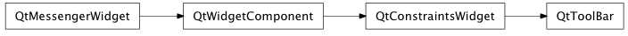
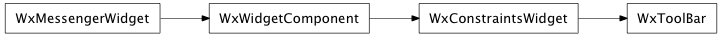

Bases: enaml.widgets.constraints_widget.ConstraintsWidget
A widget which displays a row of tool buttons.
A ToolBar is typically used as a child of a MainWindow where it can be dragged and docked in various locations in the same fashion as a DockPane. However, a ToolBar can also be used as the child of a Container and layed out with constraints, though in this case it will lose its ability to be docked.
Whether or not the tool bar is movable by the user. This value only has meaning if the tool bar is the child of a MainWindow.
Whether or not the tool bar can be floated as a separate window. This value only has meaning if the tool bar is the child of a MainWindow.
A boolean indicating whether or not the tool bar is floating. This value only has meaning if the tool bar is the child of a MainWindow.
The dock area in the MainWindow where the tool bar is docked. This value only has meaning if the tool bar is the child of a MainWindow.
The areas in the MainWindow where the tool bar can be docked by the user. This value only has meaning if the tool bar is the child of a MainWindow.
The orientation of the toolbar. This only has meaning when the toolbar is not a child of a MainWindow and is used as part of a constraints based layout.
A read only property which returns the tool bar’s items: ActionGroup | Action
Hug width is redefined as a property to be computed based on the orientation of the tool bar unless overridden by the user.
Hug height is redefined as a property to be computed based on the orientation of the slider unless overridden by the user.
alias of __NoInterface__

Bases: enaml.qt.qt_constraints_widget.QtConstraintsWidget
A Qt implementation of an Enaml ToolBar.
Handle the ‘set_allowed_dock_areas’ action from the Enaml widget.

Bases: enaml.wx.wx_constraints_widget.WxConstraintsWidget
A Wx implementation of an Enaml ToolBar.
Handle the ‘set_allowed_dock_areas’ action from the Enaml widget.